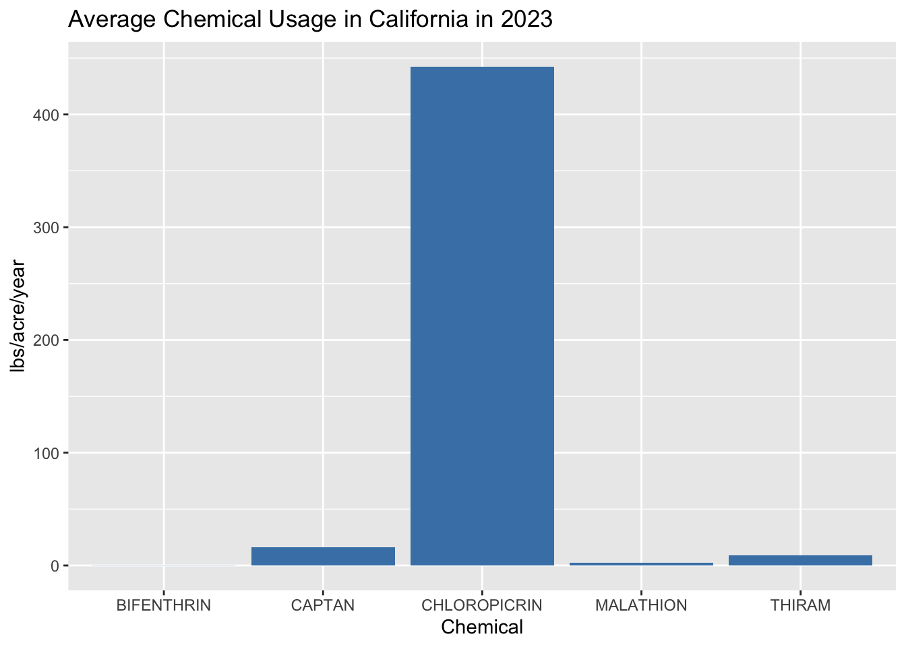
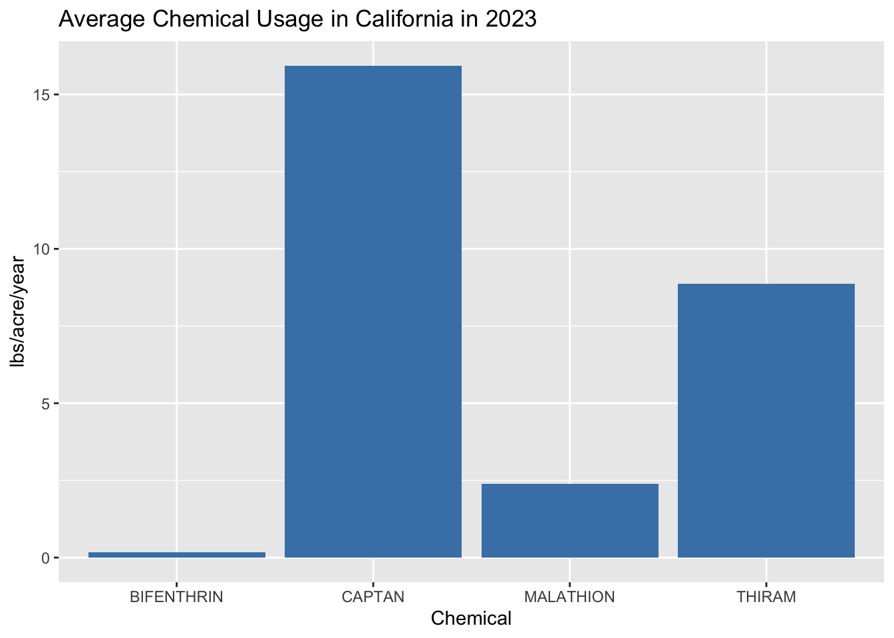
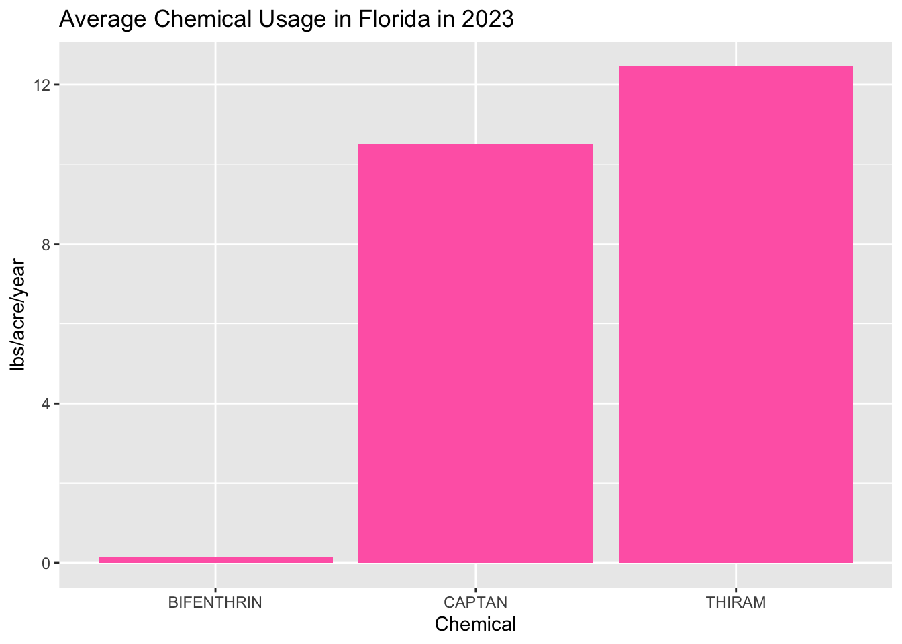
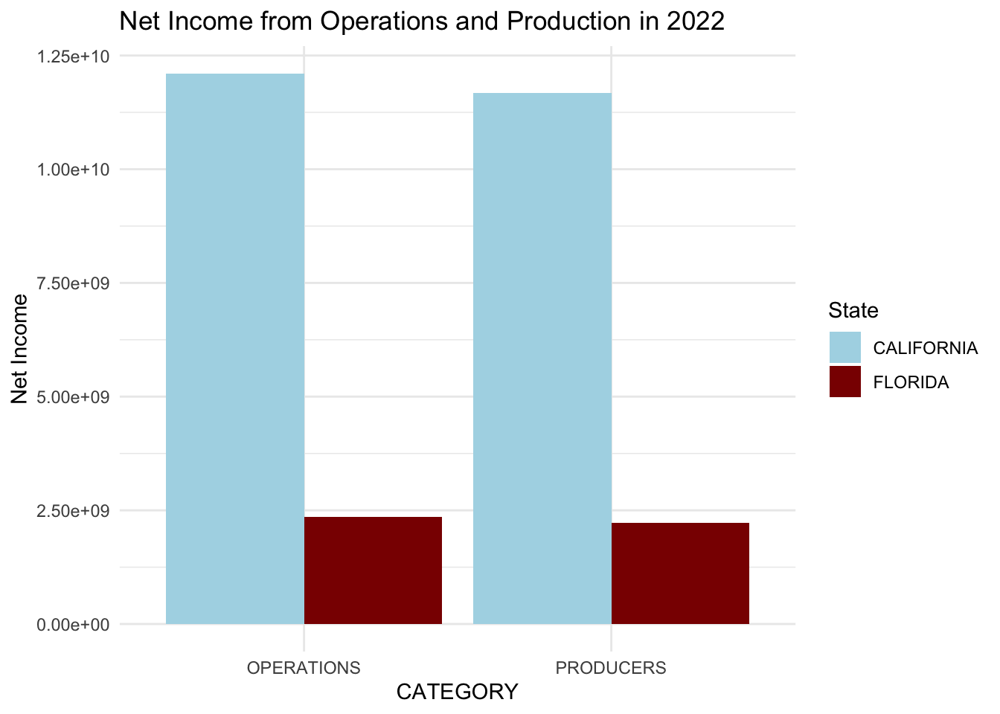
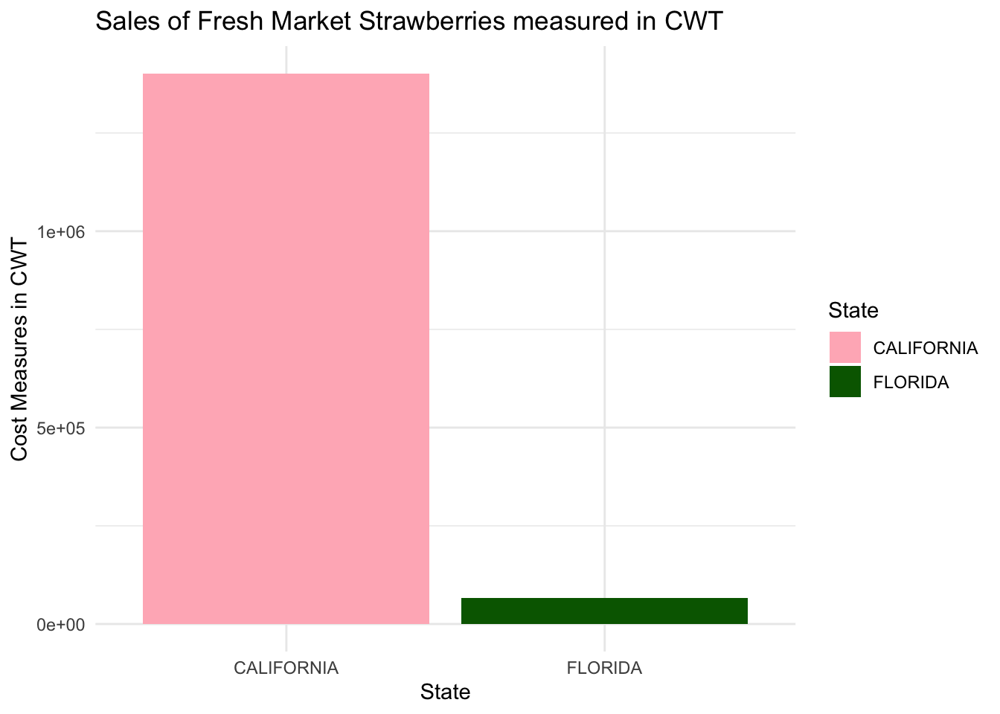

library(knitr)
library(kableExtra)
library(tidyverse)
library(stringr)
library(ggplot2)
strawberry <- read_csv("strawb_mar6.csv", col_names = TRUE, show_col_types = FALSE)
#splitting census and survey data
strawb_census <- strawberry |> filter(Program == "CENSUS")
strawb_survey <- strawberry |> filter(Program == "SURVEY")
source("Functions.R")
strawb_census <- strawb_census |> drop_one_value_col()
strawb_survey <- strawb_survey |> drop_one_value_col()
#further splitting census data to income and strawberry data
census_income <- strawb_census |> filter(Commodity == "INCOME, NET CASH FARM")
census_strawb <- strawb_census |> filter(Commodity == "STRAWBERRIES")
source("Functions.R")
census_income <- census_income |> drop_one_value_col()
census_strawb <- census_strawb |> drop_one_value_col()Midterm Project
Importing Data
Working with Census Data for Strawberries
census_strawb <- census_strawb |> separate_wider_delim( cols = "Data Item", delim = " - ",
names = c("Fruit", "Category"),
too_many = "error",
too_few = "align_start")
census_strawb <- census_strawb |> separate_wider_delim( cols = "Fruit", delim = ", ",
names = c("Fruit", "Organic", "Specification"),
too_many = "error",
too_few = "align_start")
census_strawb <- census_strawb |> drop_one_value_col()|>
filter(State %in% c("CALIFORNIA", "FLORIDA"))census_income <- census_income |> separate_wider_delim(cols = "Data Item", delim = " - ",
names = c("Income", "Specification"),
too_many = "error",
too_few = "align_start")
census_income <- census_income |> separate_wider_delim(cols = "Income", delim = ", ",
names = c("INCOME", "NET CASH FARM", "CATEGORY"), too_many = "error",
too_few = "align_start")
census_income <- census_income |> drop_one_value_col()
census_income$CATEGORY <- str_remove(census_income$CATEGORY, "^OF ")
census_income <- census_income |> filter(State %in% c("CALIFORNIA", "FLORIDA"))Working with Survey Data
strawb_survey <- strawb_survey |> separate_wider_delim(cols = "Data Item", delim = " - ",
names = c("Fruit", "Category"),
too_many = "error",
too_few = "align_start")
strawb_survey <- strawb_survey |> separate_wider_delim(cols = "Fruit", delim = ", ",
names = c("STRAWBERRIES", "Specifications"),
too_few = "align_start",
too_many = "error")
strawb_survey <- strawb_survey |> drop_one_value_col()
#test <- strawb_survey |> filter(Category == "TREATED, MEASURED IN PCT OF AREA BEARING, AVG" & "Domain Category" != "NOT SPECIFIED") # filtering strawberry data for just the chemicals
chemicals <- strawb_survey |> filter(Domain != 'TOTAL' )
chemicals <- chemicals |> drop_one_value_col()
chemicals <- chemicals |> filter(Value != "(D)" & Value != "(NA)")
chemicals <- chemicals |> drop_one_value_col()
#chemicals_yravg <- chemicals |> filter(Category == "APPLICATIONS, MEASURED IN LB / ACRE / YEAR, AVG")
#chemical_lbs <- chemicals |> filter(Category == "APLICATIONS, MEASURED IN LB")
#chemical_lbs_23 <- chemical_lbs |> filter(Year == "2023")
#cleaning chemical data
chemicals_2023 <- chemicals |> filter(Year == "2023" ) |>
mutate(`Domain Category` = str_extract(`Domain Category`, "\\((.*?)\\)"))|>
mutate(`Domain Category` = str_remove_all (`Domain Category`, "[()]")) |>
separate_wider_delim(cols = "Domain Category",
delim = " = ",
names = c('Chemical_Name', 'Chemical_Code'),
too_few = "align_start",
too_many = "error")
chemicals_2023$Value <- as.numeric(as.character(chemicals_2023$Value))
chemicals_2023 <- chemicals_2023|> filter(Value != "(D)" & Value != "(NA)")Extracting Chemical Data for each state
flo_chem <- chemicals_2023 |> filter(State == "FLORIDA")
cali_chem <- chemicals_2023 |> filter(State == "CALIFORNIA")
flo_chem <- flo_chem |> filter(Chemical_Name != "TOTAL") |>
filter(Chemical_Name %in% c("BIFENTHRIN","THIRAM", "CAPTAN"))
cali_chem <- cali_chem |> filter(Chemical_Name != "TOTAL")|> filter(Chemical_Name %in% c("CHLOROPICRIN","THIRAM", "MALATHION", "CAPTAN", "BIFENTHRIN"))
cali_chem <- cali_chem |>
select(Chemical_Name, Chemical_Code, Domain, Category, Value) |>
pivot_wider(
names_from = Category,
values_from = Value
)
flo_chem <- flo_chem |> select(Chemical_Name, Chemical_Code, Domain, Category, Value) |>
pivot_wider(names_from = Category, values_from = Value)Plotting Chemical Data from California and Florida
#plotting cali data
ggplot(cali_chem, aes(x = Chemical_Name, y = `APPLICATIONS, MEASURED IN LB / ACRE / YEAR, AVG`))+ geom_bar(stat = "identity", fill = "steelblue") +
labs(title = "Average Chemical Usage in California in 2023", x = "Chemical", y = "lbs/acre/year") 
# plotting cali chemicals without chloropicrin
cali_zoom <- cali_chem |> filter(Chemical_Name != "CHLOROPICRIN")
ggplot(cali_zoom, aes(x = Chemical_Name, y = `APPLICATIONS, MEASURED IN LB / ACRE / YEAR, AVG`))+ geom_bar(stat = "identity", fill = "steelblue") +
labs(title = "Average Chemical Usage in California in 2023", x = "Chemical", y = "lbs/acre/year") 

Tables for Cali and Florida
cali_chem |> select(-c("Chemical_Code", "Domain")) |>
kable(caption = "Chemical Usage in California in 2023",
col.names = c("Chemical Name", "Lb/Acre/Application", "Lb/Acre/Year", "Number of Applications", "Percent Crop Treated")) |>
kable_styling(full_width = FALSE, bootstrap_options = c("striped", "hover", "condensed")) |>
row_spec(0, bold = TRUE, color = "white", background = "#481F01") | Chemical Name | Lb/Acre/Application | Lb/Acre/Year | Number of Applications | Percent Crop Treated |
|---|---|---|---|---|
| CAPTAN | 1.693 | 15.932 | 9.4 | 88 |
| THIRAM | 2.201 | 8.873 | 4.0 | 70 |
| BIFENTHRIN | 0.116 | 0.178 | 1.5 | 60 |
| MALATHION | 1.807 | 2.398 | 1.3 | 19 |
| CHLOROPICRIN | 188.284 | 442.413 | 2.3 | 59 |
flo_chem |> select(-c("Chemical_Code", "Domain")) |>
kable(caption = "Chemical Usage in Florida in 2023",
col.names = c("Chemical Name","Lb/Application", "Lb/Acre/Application", "Lb/Acre/Year", "Number of Applications", "Percent Crop Treated")) |>
kable_styling(full_width = FALSE, bootstrap_options = c("striped", "hover", "condensed")) |>
row_spec(0, bold = TRUE, color = "white", background = "#036c5f") | Chemical Name | Lb/Application | Lb/Acre/Application | Lb/Acre/Year | Number of Applications | Percent Crop Treated |
|---|---|---|---|---|---|
| BIFENTHRIN | 100 | 0.117 | 0.136 | 1.2 | 6 |
| CAPTAN | NA | 2.012 | 10.509 | 5.2 | 96 |
| THIRAM | NA | 2.156 | 12.456 | 5.8 | 63 |
Working with Income Data
#working with income data from census
census_income_totals <- census_income |> filter(Domain == "TOTAL")
census_income_totals <- census_income_totals |> drop_one_value_col()
#plotting income measured in $
total_netincome <- census_income_totals |> filter(Specification == "NET INCOME, MEASURED IN $") |> select(State, CATEGORY, Value) |> mutate(Value = gsub("[^0-9.-]", "", Value),
Value = as.numeric(Value))
ggplot(total_netincome, aes( x = CATEGORY, y = Value, fill = State)) +
geom_bar(stat = "identity", position = "dodge") +
labs(title = "Net Income from Operations and Production in 2022",
x = "CATEGORY", y = "Net Income") +
scale_fill_manual(values = c("CALIFORNIA" = "lightblue", "FLORIDA" = "darkred")) +
theme_minimal() 
strawberry_table <- census_strawb |> filter(is.na(Specification))
#splitting income into income from operations and producers
strawberry_table <- strawberry_table |>
select(State, Category, Value) |>
pivot_wider( names_from = State, values_from = Value )
strawberry_table |> kable(caption = "Harvest and Sales Stats in Florida and California",
col.names = c("", "California", "Florida")) |>
kable_styling(full_width = FALSE, bootstrap_options = c("striped", "hover", "condensed")) |>
row_spec(0, bold = TRUE, color = "white", background = "#4E98a1") | California | Florida | |
|---|---|---|
| ACRES HARVESTED | 4,228 | 704 |
| SALES, MEASURED IN $ | 311,784,980 | 18,358,396 |
| SALES, MEASURED IN CWT | 1,412,627 | 67,146 |
fresh_market <- census_strawb |> filter(Specification == "FRESH MARKET") |>
filter(Category == "SALES, MEASURED IN CWT") |>
mutate(Value = gsub("[^0-9.-]", "", Value),
Value = as.numeric(Value))
ggplot(fresh_market, aes( x = State, y = Value, fill = State)) +
geom_bar(stat = "identity", position = "dodge") +
labs(title = "Sales of Fresh Market Strawberries measured in CWT",
x = "State", y = "Cost Measures in CWT") +
scale_fill_manual(values = c("CALIFORNIA" = "lightpink", "FLORIDA" = "darkgreen")) +
theme_minimal() 